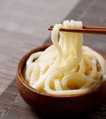
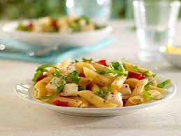
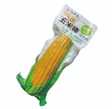
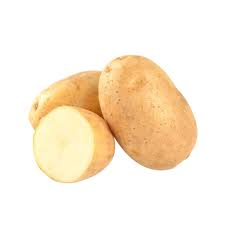

C
主食 — 全榖雜糧類
Carbohydrate ｜ 每份約含 15g 醣質 · 70 大卡
🍚
以下每一格 ＝ 1 份主食（C），任何一格等量可相互代換。根莖類（地瓜、玉米、南瓜等）也是主食，吃了要計入當餐份數。
🌾 米飯 & 粥類

白飯 / 糙米飯
¼ 碗
熟重約 50g

粥 / 稀飯
½ 碗
熟重約 125g
壽司 / 飯糰
½ 個
約 40g 米飯
🍜 麵食 & 粉類

麵條（熟）
½ 碗
白麵、油麵、烏龍

冬粉 / 米粉
½ 碗
熟重約 60g

通心粉（熟）
½ 碗
義大利麵同

水餃
3–4 個
約 30g 麵皮

春捲皮
1.5 張
約 30g
🍞 麵包 & 穀類

薄片吐司
1 片
約 25–30g

全麥吐司
1 片
約 25–30g

市場饅頭
¼ 個
冷凍饅頭 ⅓ 個

法式長棍麵包
1 小段
約 30g

燕麥片（乾）
3 湯匙
約 20g

綠豆（熟）/ 五穀粉
2 湯匙
約 20g
🌽 根莖類（也算 C！）

玉米
食指長
玉米粒 ¼ 碗

地瓜 / 芋頭
½ 碗
熟約 55–70g

南瓜
½ 碗
熟約 85g

馬鈴薯
½ 個（中）
約 90g

山藥
1 段（中）
約 80g

栗子
3 個
約 30g